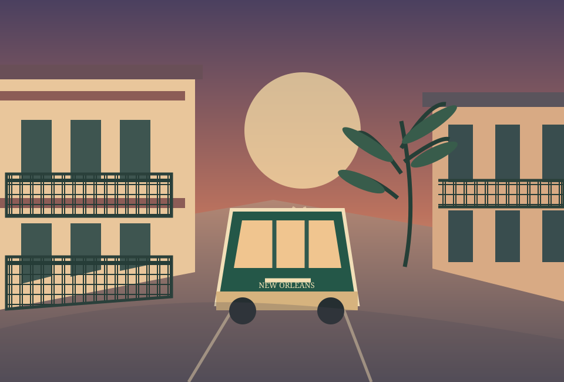

WANDER / FRENCH QUARTER
Walk the old streets
Start near Jackson Square and leave room for the balconies, courtyards, and little discoveries along the way.
Explore the Quarter ↗A CITY I WANT TO EXPLORE · LOUISIANA
Balconies, brass bands, old stories, and a streetcar ride with no hurry. This is the city I picked for my next travel daydream.

THE REASON I CHOSE IT
New Orleans feels like a place where the street itself becomes part of the story. I want to wander the French Quarter, see the Garden District, listen to live jazz, and take my time between them.
This is a personal wish list, not a fixed reservation. I’d check hours and transit alerts before going.
THREE WAYS TO FALL IN LOVE
History, architecture, and music — each one a different way into the city.
WANDER / FRENCH QUARTER
Start near Jackson Square and leave room for the balconies, courtyards, and little discoveries along the way.
Explore the Quarter ↗SLOW DOWN / GARDEN DISTRICT
Make an afternoon for historic homes, leafy blocks, and a long walk without rushing to the next stop.
See the district ↗LISTEN / JAZZ & FRENCHMEN
Learn about jazz at the National Historical Park, then look for a live performance around Frenchmen Street.
Visit the jazz park ↗CSS FILTERS / A COLOR STUDY
The same illustrated scene gets three different looks using CSS filters. Color can change the feeling of a memory before the trip even begins.
AN HTML TABLE / THREE DAYS
A sketch of how I would spend three days. The plan leaves space to follow whatever catches my eye.
| Day | Neighborhood | The idea | Little moment |
|---|---|---|---|
| 01 Arrive & wander | French Quarter | Walk near Jackson Square and explore the historic streets. | Pause for music and a sweet treat. |
| 02 Take the long way | Garden District | Ride toward St. Charles Avenue and stroll beneath the oaks. | Notice the details on the houses. |
| 03 Listen & linger | French Quarter → Frenchmen | Visit the jazz park and look for live music later. | Bring home a story worth telling. |
Streetcar service and park programs can change. Check RTA routes and the park calendar before visiting.
THE JOURNEY IS THE POINT
New Orleans is the kind of city I want to explore with curiosity and comfortable shoes. This page is my invitation to keep dreaming, researching, and eventually go.
Back to the beginning ↑